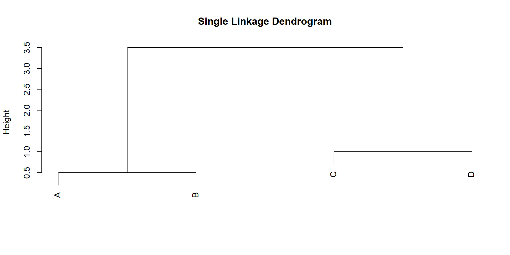
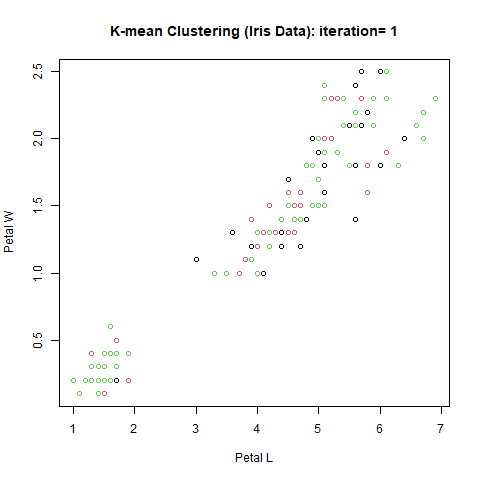

Multivariate Analysis Lecture 15: Model-Free Clustering
2025-05-19
Introduction to Cluster Analysis
- First used in anthropology, psychology, biology
- Then personality psychology
- Now widely used in many fields
Introduction to Cluster Analysis
Exploratory
Aims to understand/ learn the unknown substructure of multivariate data
Seeks rules to group data
- Large between-group difference
- Small within-group difference
Cluster Analysis vs Classification Analysis
- Cluster analysis
- Data are unlabeled
- The number of clusters are unknown
- “Unsupervised” learning
- Classification
- The labels for training data are known
- The number of classes are known
- Want to allocate new observations, whose labels are unknown, to one of the known classes
- “Supervised” learning
Clustering Methods
- Model-free:
- Hierarchical clustering. Based on similarity measures
- Nonhierarchical clustering. K-means
- Model-based clustering
Hierarchical Clustering
- Hierarchical clustering is a method of cluster analysis which seeks to build a hierarchy of clusters.
- The result of hierarchical clustering is usually presented in a dendrogram, which shows the arrangement of the clusters.
- Hierarchical clustering can be divided into two types:
- Agglomerative clustering
- Bottom-up approach
- Start with each object in its own cluster and merge them into larger clusters
- Divisive clustering
- Top-down approach
- Start with all objects in one cluster and divide them into smaller clusters
- Agglomerative clustering
Agglomerative Clustering
- Agglomerative clustering is a bottom-up approach to hierarchical clustering.
- The algorithm works as follows:
- Start with each object in its own cluster
- Merge the closest pair of clusters
- Repeat steps 2 until only one cluster remains
- Measure distance
- between two objects
- between two clusters
Distance Functions: Between Objects
- Euclidean: the straight-line distance between two points
We will use Euclidean distance for examples in this lecture.
- Manhattan: the sum of the absolute differences between the coordinates of the points
- Minkowski: a generalization of both Euclidean and Manhattan distances
- Mahalanobis: a measure of the distance between a point and a distribution
Distance Functions (linkage): Between Clusters
- Single linkage: distance between the closest pair of objects in the two clusters
- Complete linkage: distance between the farthest pair of objects in the two clusters
- Average linkage: average distance between all pairs of objects in the two clusters
- Centroid linkage: distance between the centroids of the two clusters
Example: Four Points
Code
# Sample data
data <- data.frame(
x = c(1, 1.5, 3, 5), # X-coordinates
y = c(0, 0, 0, 0), # Y-coordinates (dummy for visualization)
label = c("A", "B", "C", "D")
)
# Plot the points
plot(data$x, data$y, pch = 19, col = "red", cex = 2,
xlim = c(0, 7), ylim = c(-1, 1),
xlab = "Data Value", ylab = "", yaxt = "n",
main = "Input Data Points")
text(data$x, data$y + 0.1, labels = data$label)Single Linkage
Single Linkage - Step by Step
- Calculate distance matrix for all pairs
Single Linkage - Step by Step
1st merge: merge the two closest pair: {1.0} and {1.5} to obtain a new cluster {1.0, 1.5}. The height is 0.5.
Update Distance matrix:
- D({1.0,1.5}, {3.0}) = min(2.0,1.5) = 1.5
- D({1.0,1.5}, {5.0}) = min(4.0,3.5) = 3.5
- D({3.0}, {5.0}) = 2.0
2nd merge: merge the two closest pair: {1.0, 1.5} and {3.0} to obtain a new cluster {1.0, 1.5, 3.0}. The height is 1.5.
Update Distance matrix:
- D({1.0,1.5,3.0}, {5.0}) = min(4.0,3.5,2.0) = 2.0
Final merge: merge the two closest pair: {1.0, 1.5, 3.0} and {5.0} to obtain a new cluster {1.0, 1.5, 3.0, 5.0}. The height is 2.0.
Step by Step using Single Linkage
Code
# Compute clustering
hc <- hclust(dist(data), method = "single")
# Enhanced dendrogram plot
plot(hc,
main = "Single Linkage Clustering (Points: 1.0, 1.5, 3.0, 5.0)",
xlab = "Data Values",
ylab = "Merge Height",
sub = "",
hang = -1) # Aligns all leaves at bottom
# Add merge height labels
text(x = c(1.5, 2.3, 2.5),
y = hc$height + 0.1,
labels = paste0("h=", hc$height),
col = "red", cex = 0.8)
# Add horizontal lines at merge heights
abline(h = hc$height, lty = 2, col = "gray")Common Linkage Memthods
| Method | Merge Rule | Height Meaning | Time Complexity |
|---|---|---|---|
| Single Linkage | Minimum distance between any two points | Minimum inter-cluster distance | O(n²) |
| Complete Linkage | Maximum distance between any two points | Maximum inter-cluster distance | O(n²) |
| Average Linkage | Mean distance between all point pairs | Average inter-cluster distance | O(n² log n) |
| Centroid Linkage | Distance between cluster centroids | Centroid separation (may invert) | O(n² log n) |
Common Linkage Methods
Code
# Distance matrix
dist_matrix <- dist(c(1, 1.5, 3, 5))
# Set up plotting window
par(mfrow = c(2, 2))
# Function to plot dendrogram with title
plot_dendro <- function(hclust_method, title) {
hc <- hclust(dist_matrix, method = hclust_method)
plot(hc, main = title, xlab = "", sub = "",
hang = -1, cex = 0.8)
axis(2, at = seq(0, 5, by = 1), las = 1) # Add y-axis labels
}
# Plot all methods
plot_dendro("single", "Single Linkage (MIN)")
plot_dendro("complete", "Complete Linkage (MAX)")
plot_dendro("average", "Average Linkage (UPGMA)")
plot_dendro("centroid", "Centroid Linkage (UPGMC)")Single Linkage (Minimum Distance)
Code
# Create two simple clusters
set.seed(123)
cluster_A <- data.frame(x = c(1, 1.2, 1.1), y = c(1, 1.1, 1.2))
cluster_B <- data.frame(x = c(2, 2.2, 2.1), y = c(2, 2.1, 1.9))
dist_matrix <- as.matrix(dist(rbind(cluster_A, cluster_B)))[1:3, 4:6]
# Find the closest pair of points
distances <- as.matrix(dist(rbind(cluster_A, cluster_B)))[1:3, 4:6]
min_pair <- which(dist_matrix == min(dist_matrix), arr.ind = TRUE)
closest_A <- cluster_A[min_pair[1], ]
closest_B <- cluster_B[min_pair[2], ]
# Plot
ggplot() +
geom_point(data = cluster_A, aes(x, y), color = "red", size = 4) +
geom_point(data = cluster_B, aes(x, y), color = "blue", size = 4) +
geom_segment(
aes(x = closest_A$x, y = closest_A$y,
xend = closest_B$x, yend = closest_B$y),
color = "black", linetype = "dashed", linewidth = 1.2
) +
geom_text(aes(x = 1.5, y = 1.6,
label = paste("Single Linkage Distance =",
round(min(distances), 2))),
size = 5
) +
labs(title = "Single Linkage (Minimum Distance Between Clusters)") +
theme_minimal() +
coord_fixed()Complete Linkage (Maximum Distance)
Code
# Find furthest pair
max_pair <- which(dist_matrix == max(dist_matrix), arr.ind = TRUE)
furthest_A <- cluster_A[max_pair[1], ]
furthest_B <- cluster_B[max_pair[2], ]
# Plot
ggplot() +
geom_point(data = cluster_A, aes(x, y), color = "red", size = 4) +
geom_point(data = cluster_B, aes(x, y), color = "blue", size = 4) +
geom_segment(
aes(x = furthest_A$x, y = furthest_A$y,
xend = furthest_B$x, yend = furthest_B$y),
color = "black", linetype = "dashed", linewidth = 1.2
) +
geom_text(aes(x = 1.5, y = 1.6,
label = paste("Distance =", round(max(dist_matrix), 2))),
size = 5
) +
labs(title = "Complete Linkage (Maximum Distance)") +
theme_minimal() +
coord_fixed()
Average Linkage (Mean Distance)
Code
# Calculate average distance
avg_distance <- mean(dist_matrix)
# Plot (showing all connections)
ggplot() +
geom_point(data = cluster_A, aes(x, y), color = "red", size = 4) +
geom_point(data = cluster_B, aes(x, y), color = "blue", size = 4) +
# Draw all pairwise connections
geom_segment(
data = expand.grid(1:3, 1:3),
aes(x = cluster_A$x[Var1], y = cluster_A$y[Var1],
xend = cluster_B$x[Var2], yend = cluster_B$y[Var2]),
color = "gray", alpha = 0.3
) +
geom_text(aes(x = 1.5, y = 1.6,
label = paste("Average Distance =", round(avg_distance, 2))),
size = 5
) +
labs(title = "Average Linkage") +
theme_minimal() +
coord_fixed()Centroid Linkage (Centroid Distance)
Code
# Calculate centroids
centroid_A <- c(mean(cluster_A$x), mean(cluster_A$y))
centroid_B <- c(mean(cluster_B$x), mean(cluster_B$y))
centroid_dist <- sqrt(sum((centroid_A - centroid_B)^2))
# Plot
ggplot() +
geom_point(data = cluster_A, aes(x, y), color = "red", size = 4) +
geom_point(data = cluster_B, aes(x, y), color = "blue", size = 4) +
# Mark centroids
geom_point(aes(x = centroid_A[1], y = centroid_A[2]),
shape = 4, size = 5, stroke = 1.5) +
geom_point(aes(x = centroid_B[1], y = centroid_B[2]),
shape = 4, size = 5, stroke = 1.5) +
# Draw centroid connection
geom_segment(
aes(x = centroid_A[1], y = centroid_A[2],
xend = centroid_B[1], yend = centroid_B[2]),
color = "black", linetype = "dashed", linewidth = 1.2
) +
geom_text(aes(x = 1.5, y = 1.6,
label = paste("Centroid Distance =", round(centroid_dist, 2))),
size = 5
) +
labs(title = "Centroid Linkage") +
theme_minimal() +
coord_fixed()Cluster Features or Subjects
- Cluster analysis can be used to group features or subjects.
- For example, in a dataset with hundreds of genes, we can cluster the features to find groups of similar genes or similar subjects.
- One can also simultaneously cluster both features and subjects.
- In R, this dual clustering can be done using the
heatmapfunction, which uses hierarchical clustering to cluster both rows and columns of a matrix.
Cluster Features or Subjects
- More elegant heatmaps: pheatmap::pheatmap()
K-means Clustering
Introduction
- The idea goes back to Hugo Steinhaus (1956); the name was first used by James MacQueen (1967)
- K-means is a model-free clustering method
- Is is a type of nonhierarchical clustering
- Assign each observation to the cluster with the nearest centroid
- “Nearest” is usually defined on Euclidean distance
- The goal is to minimize within-cluster variances
- We need to decide whether or not to standardize observations
- There are variations such as more robust versions (k-medians, k-medoids) and model-based (Gaussian mixture)
K-Means vs K-Nearest-Neighbors (KNN)
- Both are non-parametric
- K-means: unsupervised
- KNN: supervised
- K:
- the number of neighbors in KNN
- the number of clusters in K-Means
How Does K-means Work
- We assume the number of classes, denoted by \(K\), is known
- Let \(\mathbf X_1, \cdots, \mathbf X_n\) denote \(n\) observations in \(\mathbb R^p\).
- Let \(C_1, \cdots, C_K\) be the indices of membership
- Want to find \((C_1, \cdots, C_K)\) to minimize the objective function
\[\underset{C_1, \cdots, C_K}{min} \{ \sum_{k=1}^K \frac{1}{|C_K|}\sum_{i,i'} D^2(\mathbf X_i, \mathbf X_i') \}\]
How Does K-means Work
The objective function is equivalent to \[\underset{C_1, \cdots, C_K}{min} \{ \sum_{i=1}^n D^2(\mathbf X_i, \bar {\mathbf X}_{C_i}) \}\] where \(\bar {\mathbf X}_{C_i}\) is the centriod of cluster \(C_i\).
One widely used choice of \(D\) is the Euclidean distance, i.e., \[D^2(x,y)=||x-y||^2=(x-y)^T (x-y)\]
K-Means: Algorithm
- Step 0: standardize data if appropriate
- Step 1: Partition the observations into K initial clusters. Alternatively, we can initialize K centroids
- Step 2: Assign each observation to its nearest cluster.
- Step 3: recalculate the centroids.
- Step 4: repeat 2-3 until no more changes in assignments
Figures of K-means of Iris

cluster analysis using the R function “kmeans”
K-means clustering with 3 clusters of sizes 50, 62, 38
Cluster means:
Sepal.Length Sepal.Width Petal.Length Petal.Width
1 5.006000 3.428000 1.462000 0.246000
2 5.901613 2.748387 4.393548 1.433871
3 6.850000 3.073684 5.742105 2.071053
Clustering vector:
[1] 1 1 1 1 1 1 1 1 1 1 1 1 1 1 1 1 1 1 1 1 1 1 1 1 1 1 1 1 1 1 1 1 1 1 1 1 1
[38] 1 1 1 1 1 1 1 1 1 1 1 1 1 2 2 3 2 2 2 2 2 2 2 2 2 2 2 2 2 2 2 2 2 2 2 2 2
[75] 2 2 2 3 2 2 2 2 2 2 2 2 2 2 2 2 2 2 2 2 2 2 2 2 2 2 3 2 3 3 3 3 2 3 3 3 3
[112] 3 3 2 2 3 3 3 3 2 3 2 3 2 3 3 2 2 3 3 3 3 3 2 3 3 3 3 2 3 3 3 2 3 3 3 2 3
[149] 3 2
Within cluster sum of squares by cluster:
[1] 15.15100 39.82097 23.87947
(between_SS / total_SS = 88.4 %)
Available components:
[1] "cluster" "centers" "totss" "withinss" "tot.withinss"
[6] "betweenss" "size" "iter" "ifault" An Animated Figure of Clusters Iris Data
Code
##################################
## Define Squared Euclidean Distance
distxy=function(x,y) { return(sum( (x-y)^2)) }
#prepare the scatter plots for an animated gif
dir_out="C:/Users/yu790/Desktop/Desktop/teaching-multivariate/img/Iris_kmean/scatter"
dir.create(dir_out, recursive = TRUE, showWarnings = FALSE)
mydata=iris[,-5]
#mydata=scale(mydata)
n=dim(mydata)[1]
K=3
distance=matrix(0, n, K)
#initialize
set.seed(1)
cluster01=rmultinom(n, size=1, prob=c(0.3,0.3,0.4) )
cluster01.new=rmultinom(n, size=1, prob=c(0.3,0.3,0.4) )
cluster123=apply(cluster01.new, 2, which.max)
i=0
while( sum(cluster01!=cluster01.new) )
{
i=i+1
if (i < 10) {name = paste('000',i,'plot.png',sep='')}
if (i < 100 && i >= 10) {name = paste('00',i,'plot.png', sep='')}
if (i >= 100) {name = paste('0', i,'plot.png', sep='')}
png(filename=paste(dir_out,"/", name, sep=""))
plot(mydata[,3],mydata[,4], type="n",xlab="Petal L",ylab="Petal W",
main=paste("K-mean Clustering (Iris Data): iteration=", i))
for(k in 1:K)
points(mydata[cluster123==k,3], mydata[cluster123==k,4],col=k)
dev.off()
centroids=as.matrix(cluster01.new)%*%as.matrix(mydata)/rowSums(cluster01.new)
##to avoid switch label
centroids=centroids[order(centroids[,1]),]
cluster01=cluster01.new
for(k in 1:K)
distance[,k]=apply(mydata, 1, distxy, centroids[k,])
cluster123=apply(distance, 1, which.min)
#convert the assignment to dummy variables
cluster01.new=matrix(0, K, n)
for(k in 1:K)
cluster01.new[k,cluster123==k]=1
print(i)
print(table(cluster123))
}[1] 1
cluster123
1 2 3
22 49 79 [1] 2
cluster123
1 2 3
50 30 70 [1] 3
cluster123
1 2 3
50 36 64 [1] 4
cluster123
1 2 3
50 40 60 [1] 5
cluster123
1 2 3
50 45 55 [1] 6
cluster123
1 2 3
50 49 51 [1] 7
cluster123
1 2 3
50 54 46 [1] 8
cluster123
1 2 3
50 57 43 [1] 9
cluster123
1 2 3
50 60 40 [1] 10
cluster123
1 2 3
50 61 39 [1] 11
cluster123
1 2 3
50 61 39 Code
imgs <- list.files(dir_out, full.names = TRUE)
img_list <- lapply(imgs, image_read)
## join the images together
img_joined <- image_join(img_list[1:5])
## show the first five iterations
img_animated <- image_animate(img_joined, delay=100)
## save to disk
image_write(image = img_animated,
path = "img/iris_kmeans_animated_scatter.gif")view animated image
Cluster Memberships of Iris Data (K-Means)

An animated figure of cluster memberships of iris k-means
Code
## Define Squared Euclidean Distance
distxy=function(x,y) { return(sum( (x-y)^2)) }
#prepare the plots of cluster assignments for an animated gif
dir_out="C:/Users/yu790/Desktop/Desktop/teaching-multivariate/img/Iris_kmean/assignment"
dir.create(dir_out, recursive = TRUE, showWarnings = FALSE)
mydata=iris[,-5]
#mydata=scale(mydata) #if we would like to use standardized data
n=dim(mydata)[1]
K=3
distance=matrix(0, n, K)
#initialize clusters
set.seed(1)
cluster01=rmultinom(n, size=1, prob=c(0.3,0.3,0.4) )
cluster01.new=rmultinom(n, size=1, prob=c(0.3,0.3,0.4) )
cluster123=apply(cluster01.new, 2, which.max)
#cluster01.new is 3-by-150
i=0
while( sum(cluster01!=cluster01.new) )
{
i=i+1
if (i < 10) {name = paste('000',i,'plot.png',sep='')}
if (i < 100 && i >= 10) {name = paste('00',i,'plot.png', sep='')}
if (i >= 100) {name = paste('0', i,'plot.png', sep='')}
png(filename=paste(dir_out,"/", name, sep=""))
tmp=cluster01.new
colnames(tmp)=1:n
barplot(cluster01.new, ylim=c(0,1), col=c(1:3),
main=paste("K-mean Clustering (Iris Data): iteration=", i),
xlab="Iris Species: Setosa, Versicolor, Virginica")
dev.off()
centroids=as.matrix(cluster01.new)%*%as.matrix(mydata)/rowSums(cluster01.new)
##to avoid switch label
centroids=centroids[order(centroids[,1]),]
cluster01=cluster01.new
for(k in 1:K)
distance[,k]=apply(mydata, 1, distxy, centroids[k,])
cluster123=apply(distance, 1, which.min) #distance is 150-by-3
#convert the assignment to dummy variables
cluster01.new=matrix(0, K, n)
for(k in 1:K)
cluster01.new[k,cluster123==k]=1
print(i)
print(table(cluster123))
}[1] 1
cluster123
1 2 3
22 49 79 [1] 2
cluster123
1 2 3
50 30 70 [1] 3
cluster123
1 2 3
50 36 64 [1] 4
cluster123
1 2 3
50 40 60 [1] 5
cluster123
1 2 3
50 45 55 [1] 6
cluster123
1 2 3
50 49 51 [1] 7
cluster123
1 2 3
50 54 46 [1] 8
cluster123
1 2 3
50 57 43 [1] 9
cluster123
1 2 3
50 60 40 [1] 10
cluster123
1 2 3
50 61 39 [1] 11
cluster123
1 2 3
50 61 39 Code
## list file names and read in
imgs <- list.files(dir_out, full.names = TRUE)
img_list <- lapply(imgs, image_read)
## join the images together
img_joined <- image_join(img_list[1:5])
## show the first five iterations
img_animated <- image_animate(img_joined, delay=100)
## save to disk
image_write(image = img_animated,
path = "img/iris_kmeans_animated_assignment.gif")view animated image
Remarks
The algorithm is guaranteed to decrease the objective function
It might converge to local minimum
Use different and random initial values
Different Initial Values
Different Initial Values
K-means clustering with 3 clusters of sizes 62, 38, 50
Cluster means:
Sepal.Length Sepal.Width Petal.Length Petal.Width
1 5.901613 2.748387 4.393548 1.433871
2 6.850000 3.073684 5.742105 2.071053
3 5.006000 3.428000 1.462000 0.246000
Clustering vector:
[1] 3 3 3 3 3 3 3 3 3 3 3 3 3 3 3 3 3 3 3 3 3 3 3 3 3 3 3 3 3 3 3 3 3 3 3 3 3
[38] 3 3 3 3 3 3 3 3 3 3 3 3 3 1 1 2 1 1 1 1 1 1 1 1 1 1 1 1 1 1 1 1 1 1 1 1 1
[75] 1 1 1 2 1 1 1 1 1 1 1 1 1 1 1 1 1 1 1 1 1 1 1 1 1 1 2 1 2 2 2 2 1 2 2 2 2
[112] 2 2 1 1 2 2 2 2 1 2 1 2 1 2 2 1 1 2 2 2 2 2 1 2 2 2 2 1 2 2 2 1 2 2 2 1 2
[149] 2 1
Within cluster sum of squares by cluster:
[1] 39.82097 23.87947 15.15100
(between_SS / total_SS = 88.4 %)
Available components:
[1] "cluster" "centers" "totss" "withinss" "tot.withinss"
[6] "betweenss" "size" "iter" "ifault" Rand Index
Rand Index
Definition:
A metric (0 ≤ RI ≤ 1) measuring similarity between two clusterings by counting pairwise agreements:Agreement:
- Same cluster in both results or
- Different clusters in both results
- Same cluster in both results or
Disagreement: Points grouped differently.
Interpretation:
- 1: Perfect match
- 0: No agreement
Rand Index
Formula:
\[ \text{Rand Index} = \frac{a + b}{a + b + c + d} \]
| Symbol | Meaning |
|---|---|
| \(a\) | Pairs in same cluster in both |
| \(b\) | Pairs in different clusters both |
| \(c\) | Same in 1st, different in 2nd |
| \(d\) | Different in 1st, same in 2nd |
Rand Index Example
Code
library(cluster)
set.seed(123)
# K-means clustering
kmeans_clusters <- kmeans(iris[, 1:4], centers = 3)$cluster
# Hierarchical clustering
hclust_clusters <- cutree(hclust(dist(iris[, 1:4])), k = 3)
# Calculate Rand Index
rand_index <- function(cluster1, cluster2) {
# Create contingency table
tab <- table(cluster1, cluster2)
# Calculate combinations
n <- sum(tab)
a <- sum(choose(tab, 2)) # Pairs in same cluster in both
b <- sum(choose(rowSums(tab), 2)) - a # Pairs in same cluster only in cluster1
c <- sum(choose(colSums(tab), 2)) - a # Pairs in same cluster only in cluster2
d <- choose(n, 2) - a - b - c # Pairs in different clusters in both
# Rand Index formula
(a + d) / (a + b + c + d)
}
# Usage
ri <- rand_index(kmeans_clusters, hclust_clusters)
print(paste("Manual Rand Index:", round(ri, 3)))[1] "Manual Rand Index: 0.799"Further Topics
Further Topics: Number of Clusters
- Elbow method
- Silhouette method
- Gap statistic
- CH index
- Dunnh index
- Model-based clustering